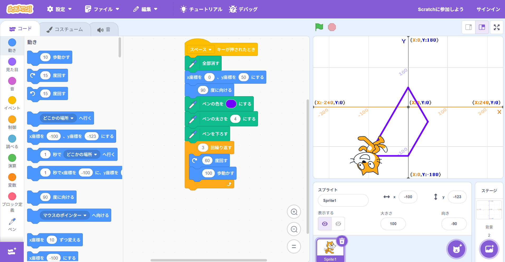
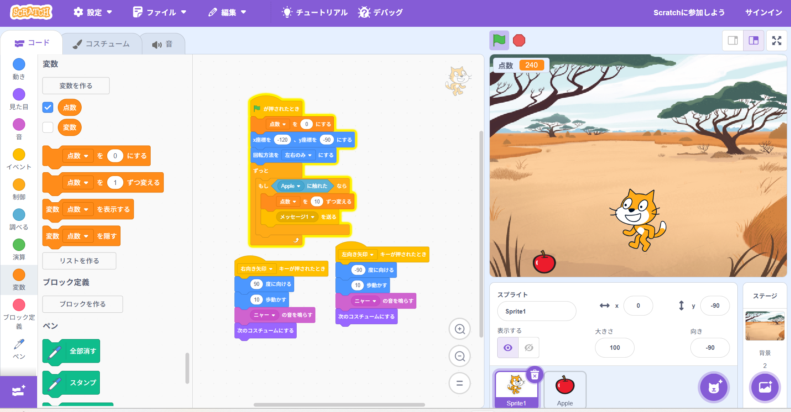

1週目のレポート ： 公大高専１年実習I-1
1b班30番 野村華琳
第1週目
1-1 サイエンスアート

1.内容
スペースが押されたときに、ペンを消してから、特定の座標に初期配置する。そのあと、ペンの色と太さを指定してから、ペンを下すことで動いたらかけるようにした。
そこから右回りに60度、そこから100歩動かすことを3回繰り返すと、なんか台形が出来上がる。
2.感想
論理的に猫がどのように動くかを考えて動かすことがとても難しい。もともと星を作るつもりが、気が付くとなぜか
台形になっていた。仕組みが分かっても、考えた通りに動かすのが大変。
1-2 ゲーム

1.内容
猫が左右にしか動けないようにしてから移動の歩数を決めて動かせるようにした
変数を作り、その変数が指定した範囲のランダムな数になるようにした。
2.感想
ゲームのシステムを初めて作って、すごく大変だと分かった。
0からゲーム開発をするならどこから始まってるんだろうと気になった。
1-3 ホームページ作成
私のホームページ
1.内容
学習した内容を説明する文章を
自分で考えて作成する（50文字以上．100文字程度を推奨．※生成AIを使ってはいけない）
2.感想
一見単純そうなホームページでも、コードがとても複雑に書かれていることが分かった、
各ページへのリンク
1週目のレポート
2週目のレポート
3週目のレポート
私のホームページ